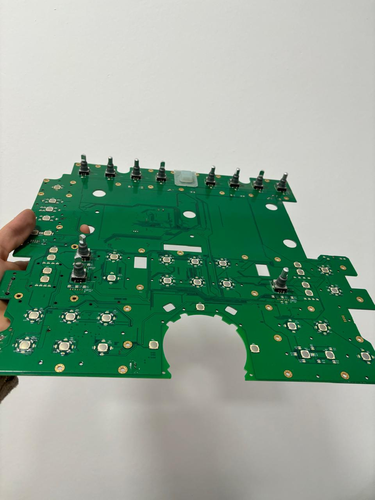
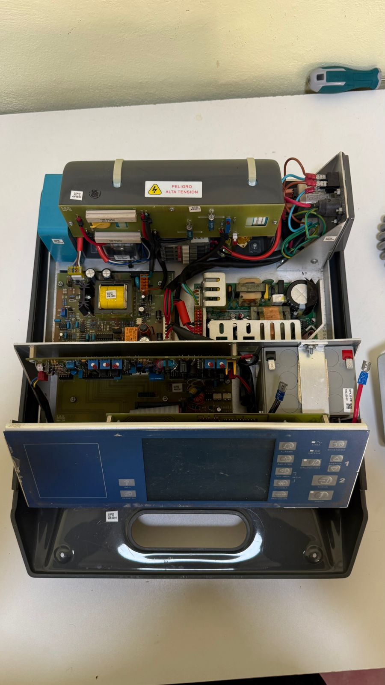
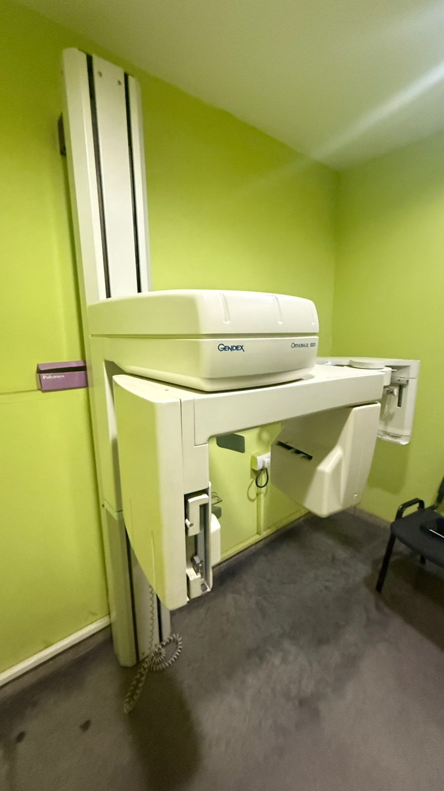

Equipamiento médico
Cobertura técnica para cada
Área Crítica
Damos cobertura técnica a una amplia variedad de equipamiento médico crítico. Cada equipo recibe el protocolo de servicio que necesita.

Damos cobertura técnica a una amplia variedad de equipamiento médico crítico. Cada equipo recibe el protocolo de servicio que necesita.
Desde ecógrafos de alta complejidad hasta equipos de diagnóstico básico: cada tipo de dispositivo recibe un protocolo de servicio específico.

Soporte técnico para toda la gama de ecógrafos: portátiles, institucionales y de alta gama. Diagnóstico, reparación, mantenimientos.

Mantenimiento y reparación de monitores multiparamétricos. Verificación de sensores, alarmas, módulos de medición y pantallas. Equipos de UCI, quirófano y sala general.

Servicio técnico de desfibriladores manuales y automáticos. Verificación de descarga, reemplazo de electrodos, mantenimiento de baterías y calibración según normas de seguridad eléctrica.

Diagnóstico y reparación de ventiladores para UCI y sala. Verificación de válvulas, sensores de flujo y presión, sistemas de alarma y software de control de ciclos ventilatorios.

Mantenimiento preventivo y correctivo de bombas de jeringa e infusión. Verificación de precisión de caudal, alarmas de oclusión y baterías.

Servicio técnico de equipos de radiología. Revisión de generadores, sistemas de alimentación y mecanismos de posicionamiento.

Mantenimiento y calibración de unidades de electrocirugía. Verificación de potencia de salida, modos de corte y coagulación, y sistemas de seguridad.

Diagnóstico y reparación de equipos varios: electrocardiógrafos, oxímetros, tensiómetros digitales y equipos de laboratorio básico.

Mantenimiento y reparación de mesas quirúrgicas eléctricas e hidráulicas. Verificación de actuadores, sistemas de posicionamiento y controles.

Servicio técnico de lámparas quirúrgicas de techo y móviles. Revisión de sistemas de iluminación LED, brazos articulados y controles de intensidad.

Diagnóstico y reparación de torres laparoscópicas. Mantenimiento de insufladores, fuentes de luz, cámaras e inyectores de CO₂.

Mantenimiento preventivo y correctivo de incubadoras neonatales. Verificación de control de temperatura, humedad, alarmas y sistemas de oxígeno.
¿No ve su equipo? Contáctenos. Evaluamos cada caso individualmente.
Conocé el trabajo que realizamos en nuestro taller y en instituciones de Misiones.






Contáctenos con el modelo y la falla o necesidad de mantenimiento. Le respondemos a la brevedad.